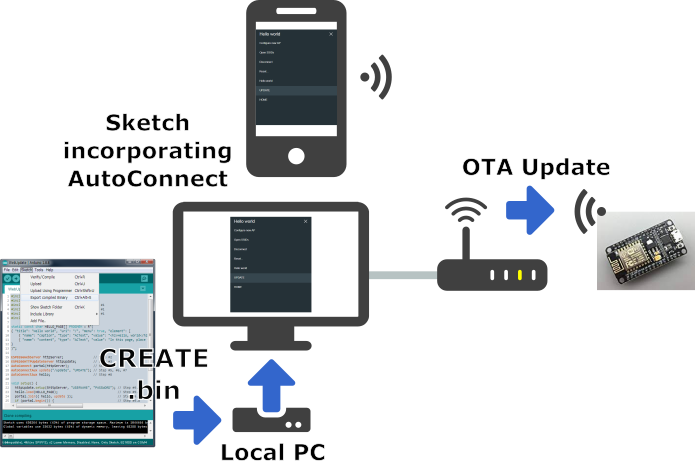
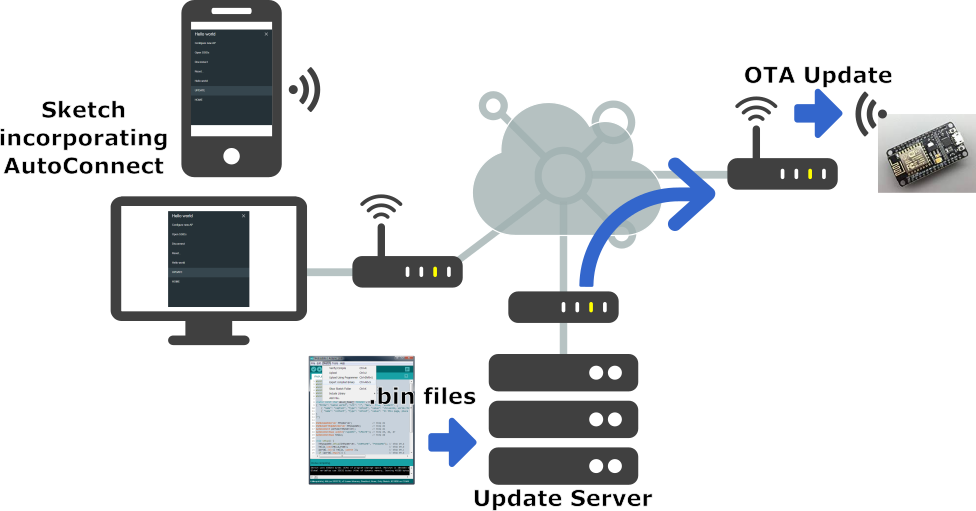

OTA Updates
OTA Updates with AutoConnect¶
AutoConnect provides two type platforms for updating the binary sketch in the ESP8266 or ESP32 module via OTA. They correspond to the Web Browser Update and HTTP Server Update whiches mentioned in the ESP8266 Arduino Core documentation.
The update behavior using a web browser as the client that supplies the binary sketch file for update follows the scenario assumed by the ESP8266 Arduino core. Therefore, the user sketch must meet the requirements described in the ESP8266 Arduino Core documentation, but you can easily embed the update feature that able to handle with the web browser by AutoConnect. All you need to do is that join the AutoConnectAux with embedded ESP8266HTTPUpdateServer1 of the core library to AutoConnect.

It is for the only the same network
This method can apply only if the client browser and the ESP module belong to the same network segment. It cannot work correctly across networks.
Another update method using an update server can be applied more broadly than using a web browser. This method can also update the ESP module over the Internet if you can secure the correct route and transparency between the ESP module and the update server. To configure this platform, you need to have an update server along with using the AutoConnectUpdate class in your sketch.

Security Disclaimer
The security level of the OTA update platform provided by AutoConnect is very weak. No guarantees as to the level of security for your application by the AutoConnect OTA Update is implied.
-
The AutoConnect library provides an implementation of the HTTPUpdateServer class that ported from ESP8266HTTPUpdateServer class for ESP32 intention. It is contained the WebUpdate under the examples folder. ↩